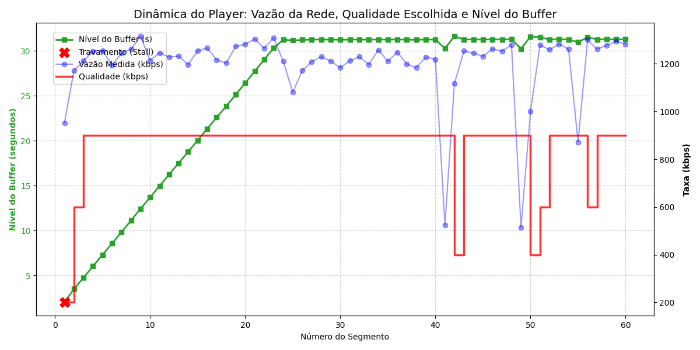
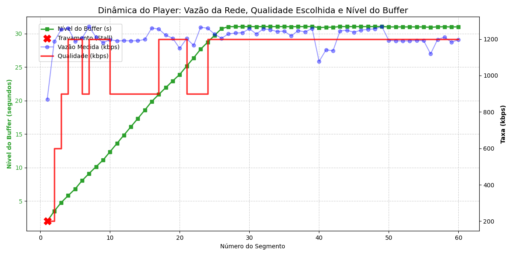
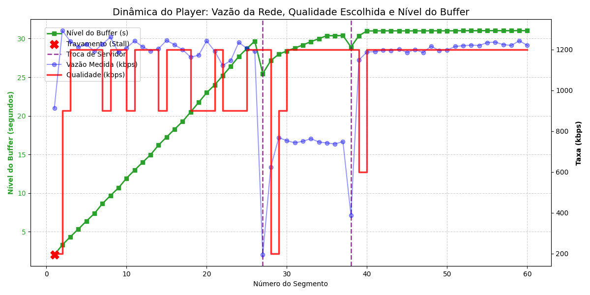
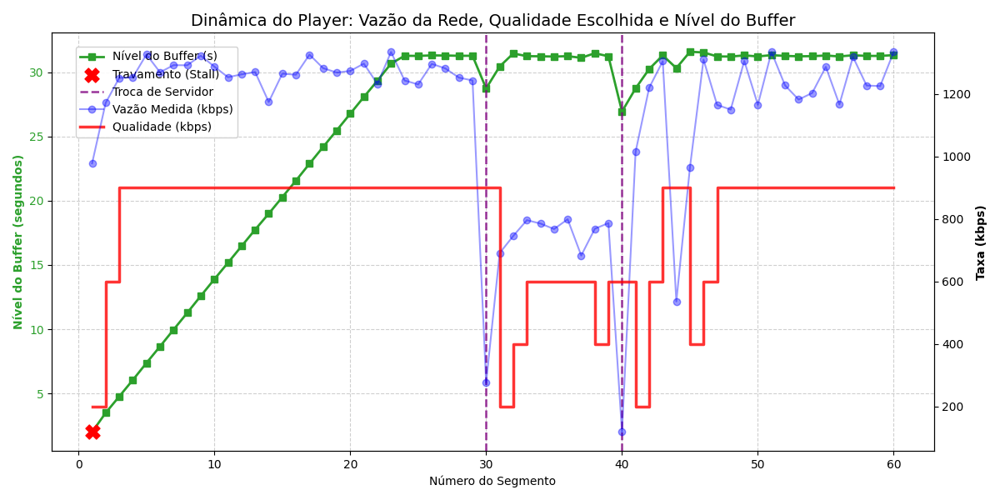
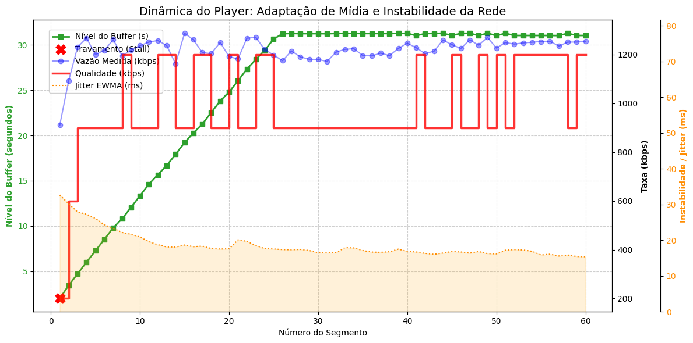

- Disciplina: Teleinformática e Redes 2 (TR2) — 2026/1
- Grupo: [Integrante 1] · [Integrante 2] · [Integrante 3]
- Apresentação Final — Entrega das 3 políticas ABR + failover + análise Wireshark
Integrante 1: "Bom dia/tarde. Somos o grupo [X] e vamos apresentar o projeto final de TR2: um cliente DASH adaptativo em Python, com três políticas de ABR, failover automático entre dois servidores e análise de tráfego com Wireshark. A apresentação tem uns 20 minutos de slides e demos ao vivo, e vamos dividir em três partes entre nós três."
Integrante 1: "O ponto de partida é entender que streaming adaptativo não é 'uma conexão só rodando'. É uma sequência de downloads HTTP curtos, e a cada um deles o cliente decide de novo qual qualidade pedir. Isso obriga a dominar várias camadas vistas na disciplina: HTTP em chunked, TCP, medição de vazão na aplicação e políticas de decisão."
| Componente | Quem fez | Papel |
|---|---|---|
| Servidor A (principal) | Infraestrutura (professor) | Manifest + segmentos + rate limit + jitter + /health |
| Servidor B (fallback) | Infraestrutura (professor) | Idêntico ao A, assume quando A falha |
Cliente (ClienteDash.py) | Nosso grupo | Manifest, vazão, buffer, ABR, failover, CSV |
BufferManager.py — estimativa de continuous playGeradorGraficos.py — gráficos a partir do CSVIntegrante 1: "Os dois servidores são fornecidos como infraestrutura — não implementamos servidor. O que construímos é inteiramente o cliente: três arquivos Python, ClienteDash orquestrando tudo, BufferManager cuidando só da matemática do buffer, e GeradorGraficos gerando os gráficos a partir do CSV que produzimos a cada execução."
/manifest na inicializaçãoIntegrante 1: "No baixar_manifesto(), ordenamos os servidores por prioridade — o de prioridade 1 vira o servidor ativo. As representações vêm na ordem que o servidor manda; usamos exatamente os valores de bitrate do manifest, nunca um valor fixo no código, porque o enunciado pede que toda decisão venha do manifest."
Integrante 1: "A política 1 é a mais simples possível: pega a vazão do segmento que acabou de baixar e escolhe a maior qualidade que essa vazão sustenta, com uma margem de segurança. O ponto crítico — que vamos provar nos próprios dados — é que ela usa só o último segmento, sem médias. Isso é proposital: o enunciado pede pra identificar as deficiências disso depois."
buffer += duração_do_segmentobuffer -= tempo_real_de_downloadbuffer_can_play no CSV: 1 se rodou liso, 0 se travouExemplo real (cenário padrão, baseline):
| Seg. | buffer antes | download | resultado |
|---|---|---|---|
| 1 | 0.0s | 0.38s | stall 0.38s (buffer_can_play=0) |
| 2 | 3.47s (após repor) | 0.53s | liso |
Integrante 1: "O primeiro segmento sempre trava um pouco, porque o buffer começa em zero — não tem como evitar isso sem pré-carregar. Do segundo segmento em diante, como o buffer já tem alguns segundos guardados, o download corre por baixo do buffer sem o usuário perceber. Isso está documentado em todas as nossas execuções: rebuffer_event só aparece no segmento 1."

Integrante 1: "Nesse gráfico de uma sessão real, o baseline sobe rápido para 720p, mas reparem que nos últimos segmentos ele começa a oscilar entre 360p, 480p e 720p — e isso sem nenhuma limitação de banda real aplicada, só flutuação natural da medição. Isso prova exatamente a deficiência que o roteiro pede pra identificar: como ele decide só pela última amostra, sem suavização, qualquer ruído pequeno já derruba a qualidade escolhida. É esse comportamento que as Políticas 2 e 3 tentam corrigir."
bba2: usa Rate-Based no arranque (buffer baixo) e Buffer-Based depois de estabilizar (≥24s de buffer)Integrante 2: "A política 2 ataca diretamente a fragilidade do baseline: em vez de confiar ciegamente na última medição de vazão, ela olha o nível do buffer. Buffer alto e estável → pode subir qualidade. Mas colocamos duas salvaguardas: histerese, pra não ficar subindo e descendo a cada segmento, e um teto de banda, pra nunca pedir uma qualidade muito acima do que a rede de fato sustenta — mesmo que o buffer esteja cheio."

| Política | Transições de qualidade (60 seg.) |
|---|---|
| Baseline (rate_based) | 2 |
| BBA2 (híbrida) | 9 |
Números do cenário "padrão" (banda alta e estável) — buscar os números do cenário com variação de banda da sessão real para o contraste mais forte.
Integrante 2: "Atenção honesta aqui: nesse cenário específico de banda alta e estável, o baseline na verdade ficou mais estável que a BBA2 — porque não havia nenhum desafio real pra ele errar. A vantagem da política 2 aparece em cenário de banda variável, que é onde o baseline oscila e a BBA2 segura a qualidade graças à histerese. [Aqui é o ponto de trazer o gráfico do cenário de oscilação/queda de banda gerado no dia, com os números reais de rebuffer e oscilação]."
baixar_com_failoverGET /health em cada umfailover_total é incrementadoIntegrante 2: "Quando o servidor A para de responder, o cliente não desiste: ele testa o endpoint /health dos outros servidores do manifest, na ordem de prioridade, e troca para o primeiro que estiver vivo. O código está em baixar_com_failover, no ClienteDash.py. O evento fica registrado no CSV pela mudança do campo server_id e pelo contador failover_total."

| Segmento | server_id | buffer_level_s | download_time_s |
|---|---|---|---|
| 26 (antes) | A | 29.68s | 1.01s |
| 27 (durante) | srv-B | 25.47s | 6.21s |
| 28 (depois) | srv-B | 27.15s | 0.32s |
Custo do failover: ~5,2s extra de download. Buffer tinha ~30s → absorveu sem travar (buffer_can_play=1 durante toda a troca).
Integrante 2: "Esses números são de uma execução real nossa, derrubando o servidor A com iptables enquanto o cliente rodava. O segmento 27 demorou 6,21s em vez do ~1s normal — esse tempo extra é exatamente o custo do timeout + health check + nova requisição. Mas como o buffer estava em quase 30 segundos no momento da queda, ele absorveu a demora inteira sem nenhum rebuffer_event. Reparem também que, logo após a troca, a qualidade despenca pra 240p — porque a vazão medida naquele segmento ficou artificialmente baixa (tamanho do segmento dividido pelos 6,21s do failover), então o ABR reage como se a rede tivesse caído. Em 1 ou 2 segmentos ele já recupera, porque a vazão real do servidor B é boa."

| Evento | buffer_level_s | download_time_s |
|---|---|---|
| Seg. 29 (antes, A) | 31.28s | 0.73s |
| Seg. 30 (failover → srv-B) | 28.74s | 3.26s |
| Seg. 39 (antes, srv-B) | 31.24s | 0.76s |
| Seg. 40 (failover → A) | 26.94s | 5.06s |
Os dois failovers foram absorvidos pelo buffer (~30s) sem rebuffer_event. Mas a qualidade despenca pra 240p no segmento seguinte ao 1º failover e só volta a 480p no segmento 33 — ainda estava em 480p quando o 2º failover acontece no segmento 40. BBA2 e a heurística recuperaram em 1–2 segmentos; o baseline levou ~9 segmentos sem nunca voltar a 720p.
Integrante 2: "Esse teste teve dois failovers seguidos: A caiu, foi pro B, depois B caiu e voltou pro A — é o nosso script teste_failover.sh, que derruba os dois servidores em sequência. O buffer absorveu as duas trocas sem travar, igual vimos na BBA2. A diferença interessante é a recuperação da qualidade: como o baseline não tem buffer nem histerese, ele trata a vazão inflada pelo failover como se fosse uma queda real de rede, e demora bem mais pra subir de qualidade de novo — comparem com a BBA2 e a heurística, que voltaram ao topo em 1 ou 2 segmentos. É uma evidência a mais da deficiência do baseline em cenários com instabilidade."
Integrante 3: "A ideia da política 3 é: quando a entrega dos pacotes está instável (jitter alto), a vazão medida é menos confiável como previsão do próximo segmento. Em vez de confiar 100% nela como o baseline faz, descontamos uma penalidade proporcional ao jitter, suavizado por EWMA pra não reagir a um pico isolado. O desconto é limitado a 40% pra não degradar demais a qualidade só por um soluço pontual na rede."

simular_jitter.sh) da sessão real, que mostra o efeito de forma mais claraIntegrante 3: "Esse gráfico já mostra os três sinais juntos: o jitter EWMA em laranja, a qualidade em vermelho e o buffer em verde. [Se houver, trocar aqui pelo gráfico gerado durante a simulação de jitter com tc netem, que mostra o pico de jitter e a reação da política lado a lado de forma mais didática]. O ponto central pra explicar pro professor: essa política não está reagindo à banda real caindo, está reagindo à instabilidade na entrega — é uma proteção diferente da política 2."
tcp.port == 8080 durante o teste de failovertimestamp do Wireshark com o timestamp do segmento no CSV (mesmo relógio do sistema)arquivos_teste/teste_failover_wireshark.sh (derruba A via iptables DROP)⚠️ Print do Wireshark anotado precisa ser inserido aqui (capturado durante a apresentação ao vivo ou em ensaio).
Integrante 3: "Aqui é onde conectamos a aplicação com o que o TCP está fazendo de fato. Rodamos o teste_failover_wireshark.sh, que insere uma regra iptables DROP pra simular a porta 8080 inacessível, com o Wireshark capturando em paralelo. No print [mostrar], dá pra ver o RST do servidor A no exato segundo em que o CSV mostra download_time_s disparando pra 6 segundos, seguido do SYN pro servidor B — é a prova de que o failover da aplicação está sincronizado com o que acontece na camada de transporte."
| Política | Reage a | Pontos fortes | Risco |
|---|---|---|---|
| 1 — Rate-Based | Vazão do último segmento | Simples, reage rápido em rede estável | Oscila / atrasa reação em rede instável |
| 2 — Buffer-Based (BBA2) | Nível do buffer | Histerese evita ping-pong | Pode demorar a reagir a queda súbita |
| 3 — Heurística (Jitter EWMA) | Vazão penalizada por instabilidade | Único que trata jitter explicitamente | Parâmetros (500ms, 40%) calibrados empiricamente |
Preencher com números (rebuffer_event, troca de qualidade, buffer mínimo) da sessão de apresentação real antes de apresentar.
Integrante 3: "Não existe uma política estritamente melhor em todo cenário — cada uma foi desenhada pra um tipo de problema diferente. [Aqui é pra citar números concretos da sessão do dia: 'a política 3 teve X eventos de rebuffer contra Y do baseline, no mesmo cenário de banda', etc. — números, não opinião, como o próprio roteiro pede]."
selecionar_qualidade_* em ClienteDash.pydownload_time_s do segmento da trocabuffer_level_s antes do segmento da troca (precisa ser ≳ ao tempo extra do failover)buffer_can_play iria a 0 e geraria rebuffer_eventTodos: "Pra fechar: o sistema cobre as quatro tarefas pedidas — baseline, política 2 com failover, política 3 com jitter, e a análise Wireshark — tudo com dados reais coletados pela gente. Ficamos à disposição para o cenário surpresa."